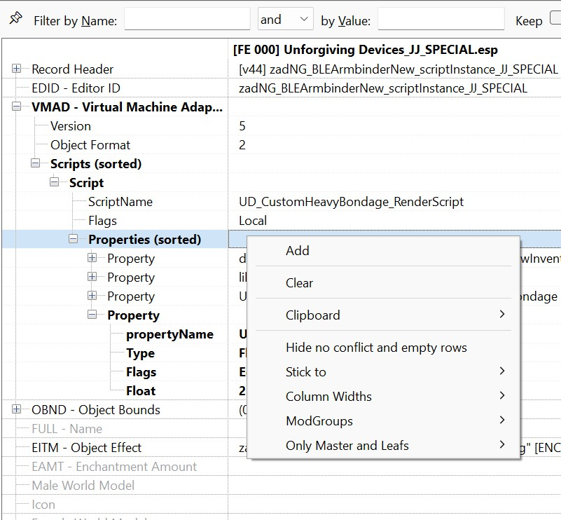

Example on how to create your own unique new items (essentially making you a mod author)
Purpose of this page is to give a practical example on how to create your very own unique new items out of existing items from the mod, in case you are interested in that.
It may be a lot if you have never done that before, but there are good tutorials on everything you need. All modding will be done with SSEEdit (TES5Edit would also work).
There is are some good YouTube Tutorials on how to install xEdit (which is often renamed to SSEEdit, but is the same software).
One not too old tutorial example is this one: How to Install & Setup xEdit - Ultimate Modding Tool
After you have installed xEdit/SSEEdit, add it to your MO2 executable list and start it from there, so all your installed mods will be listed.
Some Papyrus scripts (the ones we create/modify) will need to be compiled on the way, but ready-made build scripts are provided here, so this should basically work with the click of a button.
Basically, all you need to create your own content within this mod, is to have xEdit and working a working Unforgiving Devices installation.
So, for purpose of this example, our goal will be to create the following brand new devices:
- Ponygirl armbinder : An new device will repair itself quickly, if wearer doesn't move, essentially making the wearer run around a lot like a pony
- Ponygirl anal plug : Anal plug where the vibration strength will change based on distance traveled. The more the wearer moves, the more the plug will vibrate to reward its wearer.
But it will also slowly loose durability when moving. And to top it off, we condition that, so it will only apply when the wearer (often called 'Actor') is not belted
- Ponygirl boots : Boots which will slowly reduce wearers health, if they are not moving, essentially making the wearer run around even more, like a pony
Getting started
Every time we will be creating a new device, we will use existing devices to make our job easier. For that reason, lets open up the xEdit and select both
UnforgivingDevices.esp and all DeviousDevices .esm modules (assets, integration, expansion). Usually they should be selected automatically after selecting UnforgivingDevices.
Now we look for devices that we can use as the starting point for our modified devices. We need 3 such starting points. Lets use following devices:
- For the Ponygirl armbinder : The 'Black Ebonite armbinder' seems to be a good choice. In SSEEdit Open up the mod 'Devious Devices Expansion' and then open the section 'Armour' and find it in the list.
- Ponygirl anal plug -
- Ponygirl boots - Black ebonite pony boots
Now there are (at least) two elements here for each device. One is the "Inventory Device" (the one which has something in the 'Name' column of xEdit) and then there is something like a "Script instance".
For now lets only copy Inventory Devices. These are the devices which have the name. So we can easily find the required device by name.
After finding the device, right click it and select "Copy as new record into...". Rename the editorID so it is more clear what device it is.
After that, select "(new file).esp", and the one without ESM flag. This will copy our device to our new mod. Lets name our new mod "Unforgiving Devices - Example"
Now we need to also copy the render devices. Easiest way will be to just open our copied device, and check property deviceRendered on script zadequipscript. So lets do that.
After that, we can hold Right Ctrl and click on the editorID of render device. This will make xEdit jump to the form with the render device. The other item that we didn't copy so far.
So let's just do the same thing as with Inventory devices and copy that as well, giving it a slightly different name again, to mark it as our version of the initial device.
If you followed the steps correctly for all 3 devices, you should now have something like this:
Now we need to update properties so they are linked to our new devices. Open every single of the device and change properties deviceInventory and deviceRendered.
The said properties have to be linked to the forms we just created. For example, the created UD_Example_PonyArmbinder_ID should have the properties updates like this
This has to be done for all 3 inventory devices. After that save the plugin with Ctrl+S so we don't loose our progress in case of some unexpected issue.
Now we can edit the devices to be more in tune with our special ideas initially mentioned. We are just going to rename them as otherwise this example will be too long.
I will only say that if you want to change the textures or 3D of device, you can do it by editing render script.
Devices can be renamed by editing field "FULL - Name" on the form. It is under the script so you have to scroll a little.
After it is renamed, our mod looks like this
Patching devices
Till now this had nothing to do with Unforgiving Devices, and if you want to create new Devious Devices, you will most likely use exact same approach.
If you want, you can still try out the new device though. Don't forget to enable our newly-created .esp file in the plugins section of MO2, so the new mod will be loaded.
Load order and all that should be irrelevant at this point, since nothing is overwritten.
Once the game has started, you should be able to use the console (just press the ~ key, usually the one right below the ESC key to open/close the console in game) to add
the new device to inventory and try it on. In our example (using the number from our SSEEdit session) we would write:
Player.AddItem 0A000800 1
where you have to replace 0A000800 with the correct number from your mod. This should add exactly one piece of the new item to your inventory.
As said above, you will not be able to use UD controls on it, as it is currently an unpatched DD item.
Now we need to patch our device so it works correctly with UD. But before we do it, we will first have to add Unforgiving Devices as master to our mod.
Still in xEdit, right click our mod and select "Add master". Then select UnforgivingDevices.esp
Patching time.
Patching will be done from xEdit again.
But xEdit will want to run scripts, that installed with SSEEdit. So we go to where the SSEEdit executable is, and from there you should be able to see a folder named "Edit Scripts".
The Patching Script from UD needs to be placed into this folder, or otherwise SSEEdit will not offer it.
When you look into that folder, you see that all the files there have a .pas extension.
After searching up and down in Unforgiving Devices and it's online repository, you find, that the patching script is not there. It has to be be downloaded from
the old 2.1.1 version home page of the mod. There you will find "UD patching kit 1.7.zip" as a possible download option.
In addition, you will also find a short description of how to work with xEdit and the script on that page.
Now look into that zip file to copy all .pas files from there into the folder with all the other .pas files of SSEEdit. This should set you up for the next step.
The important thing is, that you now have the script "UD_PatchingScript" in that SSEEdit sub-folder.
Now before we start the patch, its good idea to save our mod.
Once done, click on our mod with right click and select "Apply script...". In followup window, select "UD_PatchingScript" script from "script" dropdown menu, and click on Ok.
If all went ok, following text should show up in Messages
Check if the patched devices seem okay. They should not show errors in any of the properties. Usually those are highlighted in bright colors by xEdit.
If you want, you can try out the newly created items in game again at this point: Once you equip one of them, they should show up in the UD list of items currently worn.
Devices customization
Now that our devices are usable in UD, we can start to edit them to our liking.
I recommend to check documentation first, and edit mainly the Customization group of UD_CustomDevice_RenderScript.
(((But where to find such documentation?? I personally go to the Unforgiving Devices folder and enter e.g.
findstr /S /C:"UD_StruggleCritMul" *.psc
This will bring up all mentions of UD_StruggleCritMul in the Papyrus code, so that I can see how and where the property is used. Maybe inside of the scripts there is even more documentation.
But anyway, that can be a starting point.)))
Most, if not all further customization will be only done on Render device (so not the one with the 'Name', but the other one), as that is where all magic happens.
It is important to note all patched devices are processed differently in UD then the ones that are unpatched.
If you for example change some setting of the device, while it still has the 'Patched' keyword, the value will be most likely changed when the device is locked on.
Because off that, lets remove the Patching keyword from our Pony Armbinder device, so we have at least one device to customize.
Lets do following changes to our Pony Armbinder:
- UD_durability_damage_base -> 0.75 = This way device will be little harder, but not too much
- UD_base_stat_drain -> 5 = Struggling will last longer as less stats will be drained
- UD_ResistPhysical -> 0.2 = Device will have physical resistance of 20%
- UD_ResistMagicka -> 2.0 = Device will regain durability if actor tried to struggle using magicka
- UD_StruggleCritChance -> 45 = Big (45%) chance of crit on every second of minigame
- UD_StruggleCritDuration -> 0.7 = Duration of crit is only 0.7 seconds
- UD_StruggleCritMul -> 2.5 = Crit multiplier is 2.5x
- UD_Level -> -2 = Device will have similar level as its wearer
For that you have to click on the render device (the one with no name) and then look at the
settings on the right of the screen. Click open VMAD, then Scripts(sorted), the Script and Properties (sorted).
Right-click next to 'Properties (sorted)' and select "Add" from the context menu to add a new property.
Copy-and-paste properties from other items (then you can also see the data type and such things)
or just copy the property names from the list above. Most will be 'Float' data type.

Lets also add UD_PatchHard keyword to other 2 devices, so they are little harder to escape.
Now save and close the xEdit, so our mod .esp file is created.
Create new mod, if using ModOrganizer, and then move your new .esp file from the Overwrite folder into your newly created mod, if you want.
The important thing is, that the .esp is enabled in your plugin list, so you can try it out in game as above and see you changes in effect.
Congratulations are in order! You have created your first mod, that actually does something to the game.
Now that all of that is done, we can start the scripting, which will give our devices their unique behavior.
Scripting
Setting your machine up for development
In the following, we will change the scripts associated with your newly created items.
For that, we should first try to compile a basically unchanged script from the original item, to see if your setup works.
Once that is assured, we can make changes to the scripts and make them actually unique.
Note: For the this step, you need to have GIT installed. (Installation should be straightforward with a windows installer.)
I'm not sure, but you may also need to have the Creation Kit (CK) installed.
It used to be available from Bethesda's Website, but now it is exclusively available from Steam.
The Skyrim SE version is probably what you want there.
Now inside of your newly created mod, i.e. inside of that same folder, that contains your newly created .esp file, create another folder named 'Script'.
Next create folder 'Source' inside the folder 'Scripts'.
Lastly copy following files
- BUILD_ALL.bat from Scripts folder in Unforgiving Devices installed mod (1.main/Scripts in fomod zip). Copy it to our Scripts folder (but not the Source folder!)
- RenderDeviceTemplate.psc from docs folder of Unforgiving Devices mod to our Scripts/Source folder
Now, copy the RenderDeviceTemplate.psc 2 times, so you have exactly 3 copies of the script
Rename them so they are named as follows
If we run BUILD_ALL now, compilation will fail. (That isn't a problem. Try it out to see what it looks like.)
We have to edit the newly renamed .psc files. You can do that with any text editor you like.
Many people prefer VS code, because of the nice syntax highlighting with the Papyrus-Extension, but that is optional and you don't need that for compiling or anything.
In the opening section of the UD_PonyArmbinder_RD.psc file (and the other files), there should be a line like this:
Scriptname ;/DEVICE SCRIPT NAME/; extends ;/PARENT SCRIPT NAME/;
Now we change ;/DEVICE SCRIPT NAME/; so it says correct name, and ;/PARENT SCRIPT NAME/; which says the name of parent script.
- ;/DEVICE SCRIPT NAME/; - Name of the script file. So in our example, it will be UD_PonyArmbinder_RD, etc...
- ;/PARENT SCRIPT NAME/; - Parent script. For Pony Armbinder, we will use UD_CustomHeavyBondage_RenderScript. For Pony Boots, we will use UD_CustomBoots_RenderScript.
For Pony Plug, we will use UD_CustomPlug_RenderScript
After changing all files correctly, we can try to compile them, i.e. open the Source folder, and run BUILD_ALL.bat.
Note that it first needs to download all required sources (if you never started BUILD_ALL before), so it might take a while depending on your connection.
Good new is that it only needs to download once. After that, you can compile offline if you want to.
If you did everything ok, the BUILD_ALL.bat should show something like this
Now, we have to link our new scripts in xEdit to our devices. So lets again open up the xEdit and our mod.
Go to all the render devices, and replace existing ScriptName with our new script
Do it for all of our devices. After its done, we can finally get to scripting.
Writing your first papyrus code: Pony Armbinder
At this point, it might be good to just briefly read over the UD_PonyArmbinder_RD, preferably with syntax highlighting from VS code or another Papyrus editor.
Most of the available functions and hooks, where we could add new effects are documented in the code.
To make a super-simple example, we could edit the function IntiPostPost. By default it does nothing else except what the parent script would have done.
But we can add a message, just to try and see how it works. If we put a Debug.Messagebox here, a message should pop up as soon as we have equipped the New
device. We can compile that and try it out right away.
;/ Function: InitPostPost
Called as absolutely last instruction of whole initialization chain.
You can use this for some resource heavy processes, or even add infinite loop there.
Should always call parent script, to prevent unintended behavior
/;
Function InitPostPost()
parent.InitPostPost()
Debug.MessageBox("The new armbinder has been equipped (and our function InitPostPost been triggered).")
EndFunction
You get the idea and can go from there. Below is quite a big example, that may be a bit of a leap from here.
First lets edit UD_DeviceType in function InitPost. For the armbinder, lets change the UD_DeviceType to "Pony Armbinder". For other scripts, we will do something similar.
As outlined in the beginning, for this tutorial we want this device to be repairing itself while actor stands in one place. Below you find a snippet from the code, that does exactly that.
You can see that only the functions InitPost, OnUpdatePost and GetAiPriority were edited.
The other part, the new Deactivation minigame, is also added to demonstrate how to add a simple minigame, but that is already beyond our initial thought.
Scriptname UD_PonyArmbinder_RD extends UD_CustomHeavyBondage_RenderScript
import UnforgivingDevicesMain
Float _lastX = 0.0
Float _lastY = 0.0
Bool _deactivationMinigameON = false
Float _DeactivationProgress = 0.0
;our new minigame
bool Function _DeactivationMinigame(Bool abSilent = False)
if !minigamePrecheck(abSilent)
return False
endif
if _DeactivationProgress >= 100.0
if !abSilent
UDmain.Print(GetDeviceName()+" is already deactivated!")
endif
return false
endif
;reset minigame values, have to be always called before we do some changes
resetMinigameValues()
;minigame will not damage device
setMinigameOffensiveVar(False,0.0,0.0,True)
;minigame will drain 100% of base stat drain + 10% of actor stamina per second
setMinigameWearerVar(True,UD_base_stat_drain + getMaxActorValue(getWearer(),"Stamina",0.1))
;minigame will cause exhaustion with only 50% duration
setMinigameEffectVar(True,True,0.5)
;toggle on widget, and set it to be automatically updated on every tick. Set color to 0x12345678. No icon provided in this case
setMinigameWidgetVar(True, False, True, 0x12345678, -1, -1)
;set minimum stat
setMinigameMinStats(0.8)
;check minigame and start it if its ok
if minigamePostcheck(abSilent)
;set our _deactivationMinigameON flag on, so we can use it in other override functions
_deactivationMinigameON = True
minigame()
_deactivationMinigameON = False
return true
endif
return false
EndFunction
Function InitPost()
parent.InitPost()
UD_DeviceType = "Device type"
UD_ActiveEffectName = "Active effect name"
_lastX = GetWearer().GetPositionX()
_lastY = GetWearer().GetPositionY()
EndFunction
...
Function OnMinigameTick(Float abUpdateTime)
if _DeactivationMinigameON
;increase progress by 5/s
_DeactivationProgress += 5.0*abUpdateTime
;stop minigame if progress is full
if _DeactivationProgress >= 100.0
StopMinigame()
endif
else
parent.OnMinigameTick(abUpdateTime)
endif
EndFunction
...
Function OnUpdatePost(float afTimePassed)
parent.OnUpdatePost(afTimePassed)
;only check if device is not deactivated
if _DeactivationProgress < 100.0
Actor loc_actor = GetWearer()
;lets calculate the avarage speed from last update per minute
float loc_distance = _CalcTraveledDistance()
float loc_avaragespeed = loc_distance/(UDCDmain.UD_UpdateTime)
;if wearer is in minigame, count it as movement
if UDCDmain.ActorInMinigame(loc_actor)
loc_avaragespeed += 100
endif
;print info to console, so we can calibrate the value
float loc_repairamount = fRange((20/loc_avaragespeed)*UDCDmain.UD_UpdateTime,0.0,10.0)
GInfo(self+"::Repaired by ="+loc_repairamount)
RefillDurability(loc_repairamount)
_lastX = loc_actor.GetPositionX()
_lastY = loc_actor.GetPositionY()
endif
EndFunction
Float Function _CalcTraveledDistance()
Actor loc_actor = GetWearer()
if loc_actor.IsOnMount()
return 0.0
endif
Float loc_x = loc_actor.GetPositionX()
Float loc_y = loc_actor.GetPositionY()
Float loc_Dx = _lastX - loc_x
Float loc_Dy = _lastY - loc_Y
return Math.sqrt(loc_Dx*loc_Dx + loc_Dy*loc_Dy)
EndFunction
...
Function onDeviceMenuInitPost(bool[] aaControl)
parent.onDeviceMenuInitPost(aaControl)
aaControl[16] = False ;disable filder
UDCDmain.currentDeviceMenu_allowSpecialMenu = True ;always show special menu. Option will only show if atleast one of the currentDeviceMenu_switch is true
UDCDmain.currentDeviceMenu_switch1 = True ;always show deactivation option
EndFunction
...
string Function addInfoString(string asInfo = "")
String loc_info = parent.addInfoString(asInfo)
;add info about deactionation to details
loc_info += "Deactivation= " + Round(_DeactivationProgress*100) + "\n"
return loc_info
EndFunction
...
Function updateWidget(bool abForce = false)
if _DeactivationMinigameON
;update widget with our value
SetWidgetVal(_DeactivationProgress/100.0)
else
parent.updateWidget(abForce)
endif
EndFunction
...
bool Function proccesSpecialMenu(int aiMsgChoice)
if aiMsgChoice == 0
;start deactivation minigame, and show messages
return _DeactivationMinigame(False)
else
return false
endif
EndFunction
...
Int Function GetAiPriority()
;hight priority
return 90
EndFunction
Pony Boots
This this will damage actors health if the actors doesn't move. This is again done by editing some function in the script
Scriptname UD_PonyBoots_RD extends UD_CustomBoots_RenderScript
import UnforgivingDevicesMain
Float _lastX = 0.0
Float _lastY = 0.0
Function InitPost()
parent.InitPost()
UD_DeviceType = "Pony Boots"
UD_ActiveEffectName = "Active effect name"
_lastX = GetWearer().GetPositionX()
_lastY = GetWearer().GetPositionY()
EndFunction
Function OnUpdatePost(float afTimePassed)
parent.OnUpdatePost(afTimePassed)
Actor loc_actor = GetWearer()
;lets calculate the avarage speed from last update per minute
float loc_distance = _CalcTraveledDistance()
float loc_avaragespeed = loc_distance/(UDCDMain.UD_UpdateTime)
;if wearer is in minigame, count it as movement
if !UDCDmain.ActorInMinigame(loc_actor) && loc_avaragespeed < 150
float loc_damage = 2.5*UDCDMain.UD_UpdateTime
;damage health only if actor have atleast 20 health
if (GetWearer().GetAV("Health")) > (loc_damage - 20)
GetWearer().DamageAV("Health",loc_damage)
else
GetWearer().ForceActorValue("Health",20)
endif
endif
_lastX = loc_actor.GetPositionX()
_lastY = loc_actor.GetPositionY()
EndFunction
Int Function GetAiPriority()
;parent priority + 10
return parent.GetAiPriority() + 10
EndFunction
Pony plug
Lastly, the plug should vibrate the more the actor moves. This is yet again done by editing some of the template functions
Scriptname UD_PonyPlug_RD extends UD_CustomPlug_RenderScript
import UnforgivingDevicesMain
Float _lastX = 0.0
Float _lastY = 0.0
Function InitPost()
parent.InitPost()
;device type
UD_DeviceType = "Pony Plug"
;can't activate
UD_ActiveEffectName = ""
;infinite vibration duration
UD_VibDuration = -1
;vibration strength
UD_VibStrength = 10
;normal edging mode -> no edging
UD_EdgingMode = 0
;device cant be struggled from
UD_durability_damage_base = 0.0
EndFunction
...
bool Function canBeActivated()
;device cant be activated
return False
EndFunction
...
Function OnUpdatePost(float afTimePassed)
parent.OnUpdatePost(afTimePassed)
Actor loc_actor = GetWearer()
;lets calculate the avarage speed from last update per minute
float loc_distance = _CalcTraveledDistance()
float loc_avaragespeed = fRange(loc_distance/(UDCDmain.UD_UpdateTime),0.0,300.0)
;if wearer is in minigame, count it as movement
if UDCDmain.ActorInMinigame(loc_actor)
loc_avaragespeed += 100
endif
;print info to console, so we can calibrate the value
int loc_newstrength = iRange(Round(loc_avaragespeed/2.0),10,100)
if loc_newstrength
GInfo(self+"::Chenging plug strength to ="+loc_newstrength)
ForceStrength(loc_newstrength)
endif
if loc_avaragespeed > 25.0
float loc_dmg = (loc_avaragespeed/200.0)*UDCDmain.UD_UpdateTime
GInfo(self+"::Plug damaged by ="+loc_dmg)
decreaseDurabilityAndCheckUnlock(loc_dmg,0.0,false)
else
refillDurability(0.5*UDCDmain.UD_UpdateTime)
endif
_lastX = loc_actor.GetPositionX()
_lastY = loc_actor.GetPositionY()
EndFunction
;function which will get us the traveled distance
Float Function _CalcTraveledDistance()
Actor loc_actor = GetWearer()
if loc_actor.IsOnMount()
return 0.0
endif
Float loc_x = loc_actor.GetPositionX()
Float loc_y = loc_actor.GetPositionY()
Float loc_Dx = _lastX - loc_x
Float loc_Dy = _lastY - loc_Y
return Math.sqrt(loc_Dx*loc_Dx + loc_Dy*loc_Dy)
EndFunction
...
Int Function GetAiPriority()
return 0
EndFunction
Making patch quest
Now that our devices are done, we can do one last thing, and that is to add them as new abadon suit. This means that if actor consumes concetrated black goo, or equips abadon plug, these devices can appear
Lets use the existing PatchTemple.psc which is in docs folder, and rename it to UD_Example_PatchScript.psc. Next we will edit the script in following way
Scriptname UD_Example_PatchScript extends UD_PatchInit
import UnforgivingDevicesMain
Armor Property PonyArmbinder auto
Armor Property PonyBoots auto
Armor Property PonyPlug auto
;called when one of the suits was choosen to be locked on
Function EquipSuit(Actor akActor,String asEventName)
;wait for menu to close before we lock the devices
Utility.wait(0.01)
;disable actor, so they cant move while devices are locked on
UDmain.UDCDmain.DisableActor(akActor)
;only if the event is UD_Patch_Example_Pony
if asEventName == "UD_Patch_Example_Pony"
libs.lockdevice(akActor,PonyArmbinder)
libs.lockdevice(akActor,PonyBoots)
libs.lockdevice(akActor,PonyPlug)
endif
;enable actor
UDmain.UDCDmain.EnableActor(akActor)
EndFunction
After that, we make new script, and add our script to it. We will then fill all relevant properties
Once that is done, we can just save all the work, compile all the script, and try our work in game.